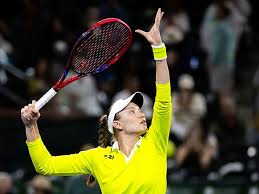

My name is Meera, and I am sixteen years old. I live in San Diego, California, and I go to Canyon Crest Academy for high school. Some important people in my life include my family and friends. I live with my parents, brother, and dog, Archie. My brother, Arjun, is a sophomore at Emory University in Atlanta. In our free time, my family and I love to go to the beach, hike, and travel together. My friendships are also extremely important to me. I made most of my friends in elementary school, and they have stuck with me all the way through high school. My friend group includes Fajar, Aanya, Feifei, Emma, Cassia, and Sohini. They are super fun to hang out with and all of us share similar interests and personalities. We like to play board games and bake together.
.jpeg)
I have several hobbies and passions. I love playing tennis and I started in 2020. Now, I am on the CCA varsity team, and I have a lot of fun with my teammates. Additionally, I love following tennis. My favorite players are Learner Tien, Elena Rybakina, and Felix Auger-Alliasime. Recently, I went to the BNP Indian Wells tennis tournament to watch them live. Additionally, I participate in an Indian classical dance called Odissi. I have been doing Odissi for the past 9 years, and I really enjoy it. My mom also does Odissi so it is fun for us to connect on it. Lastly, I love listening to music. Music helps me concentrate and focus. My favorite artists are Vince Staples, Denzel Curry, and Dominic Fike. In the future, I want to attend a concert with my brother, as we both share similar music tastes.

In the future, I aspire to give back to my community and make a difference in the world. I want to go to college and major in biomedical engineering so that I can help create cures, and therapeutics to fight against harmful diseases. I think that it would be interesting to work in vetrenerary science as I love helping animals, and being around them. Some cool aspects of biomedical engineering are prosthetics, artificial organs, and implantable devices that could save lives. My goal is to either become a research scientist or a doctor.